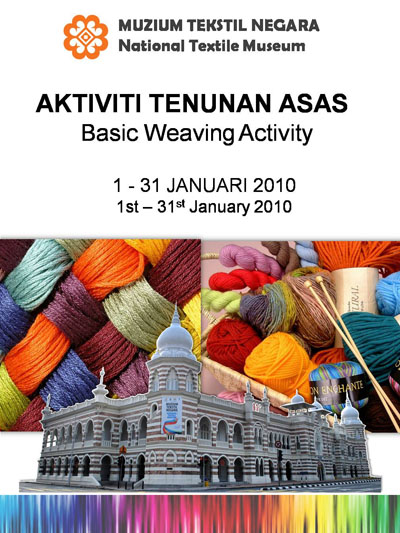
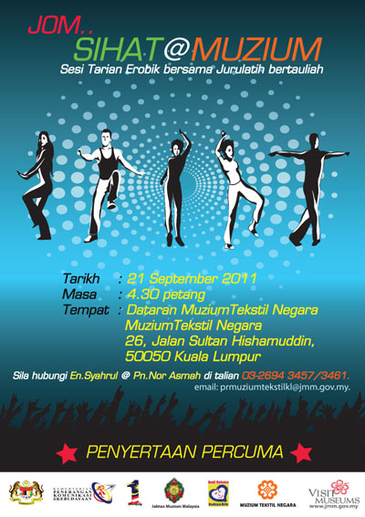
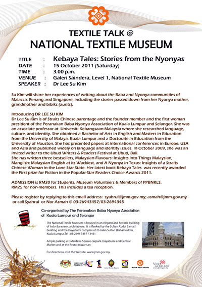

BASIC WEAVING ACTIVITIES
Date: 01 Jan 2011 - 31 Jan 2011
Location: Saindera Gallery
SIDE USE HOW TO WORKSHOP
Date: 19 August 2011
Location: Saindera Gallery

LET'S GO.. HEALTH@MUSEUM
Date: 21 Sep 2011
Location: National Textile Museum Square

KEBAYA STORY
Date: 15 Oct 2011
Location: Saindera Gallery

SACRED TIE
Date: 20 Oct 2011
Location: Saindera Gallery